七政四余
图解本命及流年星盘。
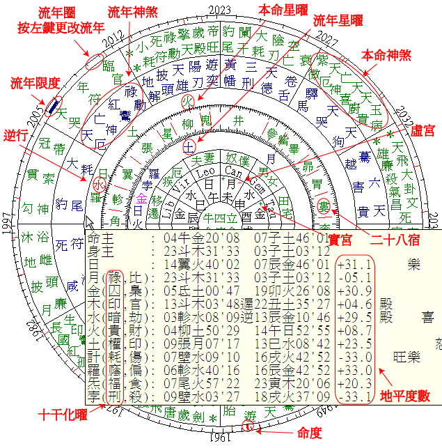
默认循清法:计都为真交点,罗睺为其对宫。
选项菜单可选择:
计都为月远地点(果老宋明古法,与月孛同度);
或计都用平均交点(古法「行无徐疾」)。
星盘注释。
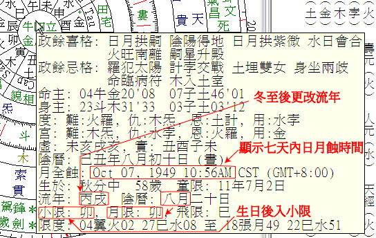
注: 流年小限生日后进入, 流年月限以阴历计算。
神煞注释。
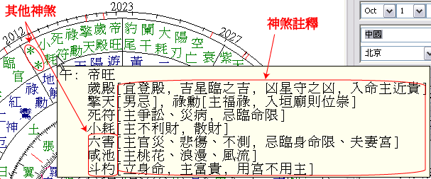
在流年圈按左键可更改流年。
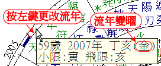
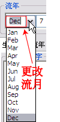
在流年圈按左键可更改流年。 更改流月, 可在 "流年" 项内选择流月, 后按更新星盘。
加按 Shift
在流年星曜按下左键, 移动到新位置, 放开左键可更改流年时间。注: 加按 Shift 键向以前时间寻找。
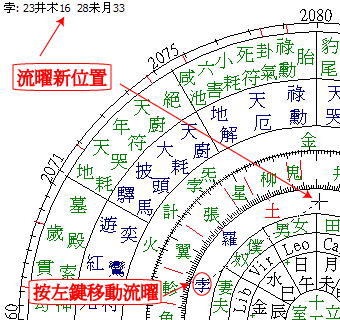
在流年星曜按右键, 可选择下次到临时间或上次到临时间。
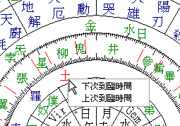
图解本命星盘。
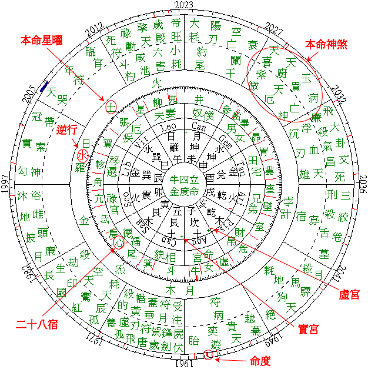
控制流年显示, 选择
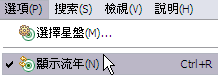
选择神煞。
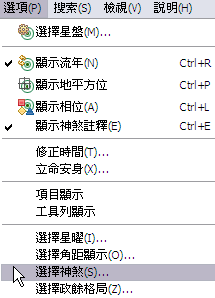
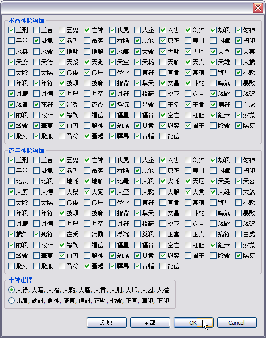
选择郑氏星案恒星制。
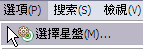
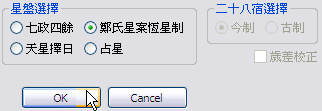
开启或关闭郑氏四十星案, 选择
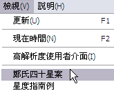
附郑氏四十星案原文 (OCR输入, 人工修正), 星曜位置以人工修改, 尽可能跟原图相近。 星盘时间以反推八字功能求得。
按: 在批注表格内部, 快速点击左键两次可放大或缩小表格以方便阅读。 可到数据管理系统选择其它案例。
开启或关闭星度指南例, 选择
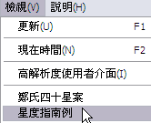
附星度指南例原文 (OCR输入, 人工修正), 星曜位置以人工修改, 尽可能跟原图相近。
按: 在批注表格内部, 快速点击左键两次可放大或缩小表格以方便阅读。